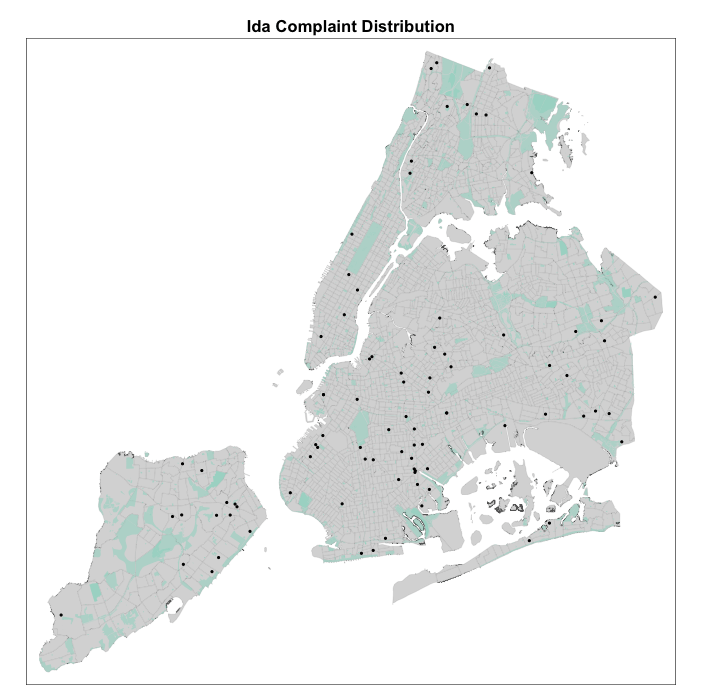

Citizen Engagement via NYC 311 Complaints

Introduction
This project investigates whether there areare neighborhoods and communities without ready access to a library branch. For the Queens Public Library system, and using public data, GIS analysis was conducted to identify vacant parcels in the borough that meet several criteria warranting a new library and to recommend three top choices based on your analysis. The selection criteria was as follows:
- Which areas in queens are without nearby libraries already?
- How dense is the area of recent residential development?
- Does the area contain historically underserved or marginalized communities?
In effect, we will coneduct a multi-criterion decision analysis to put forth a preliminary site suitability analysis.
Project undertaken with guidance of professor Boyeong Hong .